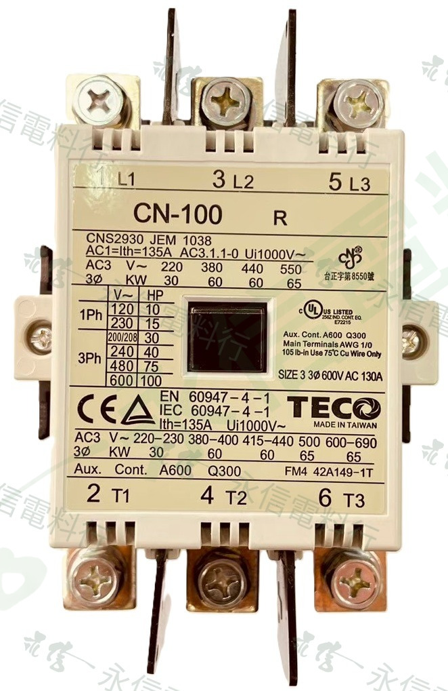

商品主圖固定使用正面／前視角度；其他照片可點選切換。所有網站商品照片均已套用永信電料行浮水印。

PRODUCT OVERVIEW
產品用途與選型說明
交流接觸器可用於控制盤、馬達啟停、電力回路切換與機台維修替換。不同型號的額定容量、接點配置、線圈電壓與安裝尺寸可能不同，不能僅依外觀替換。
- 品牌分頁獨立：本商品連結至東元電機系列，不會導向士林電機頁面。
- 正面主圖固定：系列商品卡與詳情頁預設使用正面或前斜角照片。
- 規格核對：請比對完整型號、線圈電壓、接點配置、負載條件與安裝空間。
- 照片保護：網站版圖片已套用全圖重複浮水印，原始照片另行保留。
NAMEPLATE INFORMATION
交流接觸器的銘牌資料
品牌東元電機 TECO
型號CN-100
規格標示3A2a2b
線圈電壓AC220V
銘牌可見資料AC-1 Ith 135A、Ui 1000V
銘牌標準標示CNS 2930、JEM 1038
產地標示Made in Taiwan
產品類型交流接觸器
本頁僅整理照片與資料夾名稱可確認的項目。未列出的額定容量、適用負載與接線資料，請以實物銘牌及東元原廠技術資料為準。
SELECTION CHECKLIST
詢價與規格核對
01
完整型號
請提供 CN-100 與所有接點／規格標示。
02
線圈電壓
本頁標示 AC220V，請再核對實物線圈標籤。
03
設備用途
說明馬達、控制盤或其他使用回路。
04
需求數量
提供數量及是否為維修急件。
VERIFIED SPECIFICATION DATA
規格補充與原廠核對
系列定位CN 系列重載型電磁接觸器
用途中高電流馬達與工業設備控制
替代比對重點線圈電壓、主接點額定、輔助接點配置、框架尺寸與安裝
接觸器與變頻器的完整尾碼會影響線圈、電源、容量與介面；替代時不能只用相同馬力或外觀判斷。 系列共通資料僅用於補充辨識，不取代完整型號之原廠規格書與本件實物銘牌。